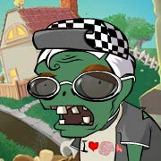
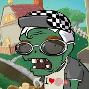

He’s got a crazy pet pig that is like a human[not saying he’s a pokemon] yu-gi-oh and him are friends even though half the time yu-gi-oh is playing duel monsters for his gramp and greg’s always playing video games there like two different people, there still friend’s.